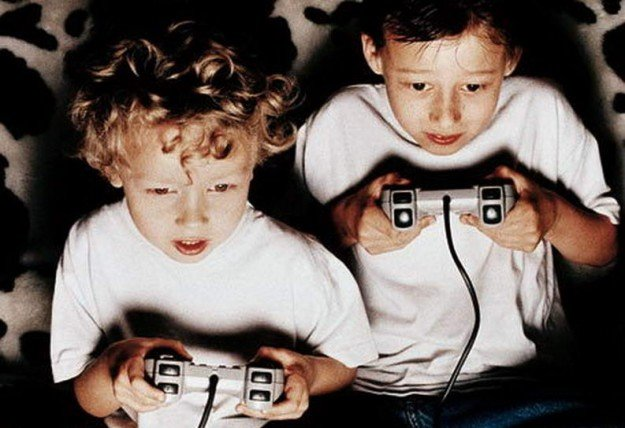

Advantages and disavantages of online games.
Gaming is everywhere. It’s no longer confined to consoles and computers – with billions of people playing games on mobiles worldwide. Young people are especially interested in eGaming. Parents can protect their children by letting them play games that are appropriate for their age whilst preventing them from playing games that arent made for kids.
What should I do to help my my child game safely?
The actions you take to keep your child safe will depend on their age and stage. Younger children will need more supervision, while teens will need less. You can also play your child’s game with them to better understand it – and learn why they enjoy it. Although online games can be fun and teach valuable skills, it’s important you provide guidance so that their gaming doesn’t interfere with other parts of their lives such as school work, sleep or physical health.
Will my child be playing with people they don’t know?
Many mobile games can have a multiplayer option where gamers can interact with their friends, as well as strangers all over the world. Some games also have private messaging features, particularly if it’s a game that allows contact with other players.
What are the benefits of gaming?
It’s easy to dismiss online gaming, but there are more benefits than you might think. Some games help to develop and hone skills like communication, team work, collaboration, strategy and hand-eye coordination. When you talk to your child about gaming, try to understand what it is that they like about playing. This will help your understanding, and help them to feel like you care about something that is important to them.
Why does my child like to play games?
Things they might like about playing egaming includes:
- The challenge of coming up with a strategy to win
- Playing with others in a team environment
- Talking and communicating with other players
- A sense of accomplishment after winning
- The creativity and imagination of playing in an online world
- The autonomy and independence to accomplish goals
- Being good at something and seeing themselves improve over time
What should I do before downloading a game?
There are a few things you can do before downloading a game for your child. This includes:
- Using parental controls: Both mobile and traditional gaming platforms offer parental control features which requires you to okay any game your child tries to download.Depending on the age of your child and any other factors that may come into play (e.g religious or cultural beliefs) it is worth looking into this. If the game needs to be linked to an email address, it is recommende you provide your emailaddress so you are across any correspondence.
- Check ratings and reviews: Before your child downloads any game, check the age rating and read reviews from other parents. Websites like Common Sense Media offer game reviews by parents for parents. You could also consider playing the game yourself first to get a feel for the online player community and familiarise yourself with any reporting or blocking procedures.
- Set boundaries: Talk to your child about the game before they get started and set some boundaries including how many hours you think is appropriate to play. It’s a good idea to discuss the basics of online safety behaviour and remind them to never share personal or private details with someone they meet online – this includes not using personal information in their username.
- Make a plan in case something goes wrong: It’s important to go through any terms of service or community guidelines with your child. Talk with them about the types of behaviour they may experience from other players while playing the game. Make sure they know how to use block and report features and let them know that they can always talk to you if they encounter something that makes them feel uncomfortable or upset.
What should I do after downloading the game?
It’s important you continue to talk to your child to understand the online activities and experiences your child has. Take the time to tune into the conversation – what might seem like just a game to you might be the way your child is connecting and interacting with people they don’t know. Regular proactive conversations helps to minimise the damage if things do go wrong online. The other things you can do:
- Set up privacy settings: Learn how to configure privacy settings especially any private messaging feature. Many adults play games rated for a general audience and you never know who is behind a gaming profile. Use a strong password and remind your child to not share personal information online.
- Be wary of in-game purchases: If the game requires a credit card to make any purchases and you agree to link your credit card, ensure that you remove your credit card information after each purchase.
- Check in: Talk to your child when they’re playing and show interest in their progress. Ask how they are going and if they have any concerns about other players. Note any changes in behaviour or sleeping patterns, or if they start talking a lot about a new friend they met in the game.
- Keep an eye on the settings: Depending on your child’s age, you may want to check their profile and messaging privacy settings from time to time to ensure that their information is kept as safe as possible.
 The Game Journal
The Game Journal